Archived videos (copied from physical or digitally hosted on YouTube)
obtained from Universe 087's InterNet
NOTE: All links are external, do not open without
FDPA179
protocol
| ID | Date (if applicable) | Source (if applicable) | Description | Link |
| VID-87-sWRH | November 1, 1978 | KUTV |
"KUTV NewsWatch 2 At 10" - 11/01/1978 - "New Restaurant in
Hurricane"
Description: KUTV news report on the opening of
Fredbear's Family Diner
|
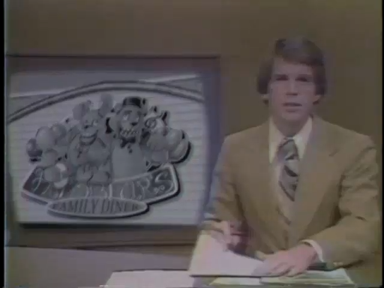 |
| ID | Date (if applicable) | Source (if applicable) | Description | Link |
| VID-87-iWoe | Circa 1982-83 | Unknown |
A birthday night at Fredbear's Family Diner
Description: Home video of a party at Fredbear's Family
Diner
|
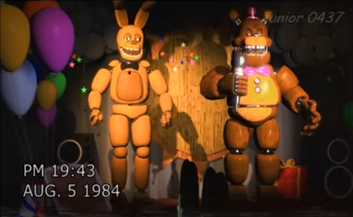 |
| VID-87-U7VW | June 2, 1985 | KTVX |
"KTVX 10pm News" - 06/02/1985 - "Missing Children in Hurricane"
Description: KTVX news report on the 1985 missing
children incident
|
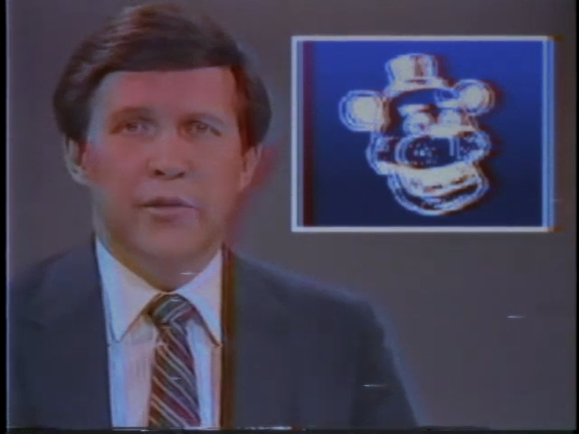 |
| VID-87-vxDo | November 6, 1987 | Unknown |
NOV. 6 1987
Description: Home video of a party at Freddy Fazbear's
Pizza
|
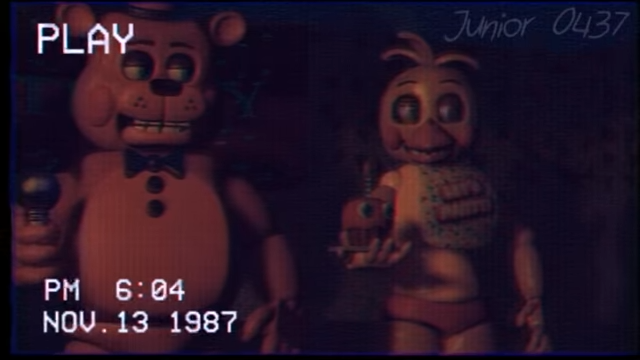 |
| VID-87-VN4x | November 25, 1987 | KTVX |
"KTVX 5:30pm News" - 11/25/1987 - "Freddy's Accident Report"
Description: KTVX news report on the release of "the Bite
of '87" official report
|
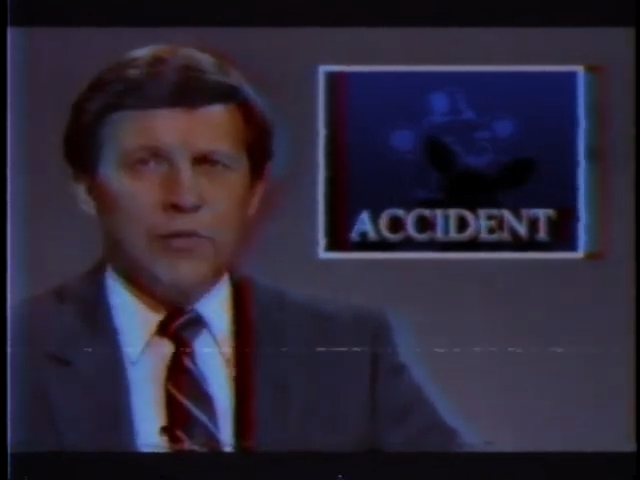 |
| VID-87-R8Yx | Circa 1989 | Unknown |
Freddy Fazbear's Pizzeria Commercial Tape (1989)
Description: Television commercial recording for the new
Freddy Fazbear's Pizza
|
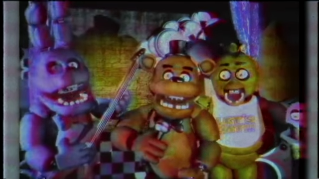 |
| ID | Date (if applicable) | Source (if applicable) | Description | Link |
| VID-87-HKJl | Circa 1990 | Fazbear Entertainment Inc. |
Freddy & Friends: On Tour! - Episode 1
Description: Episode 1 of the Freddy & Friends TV Series
|
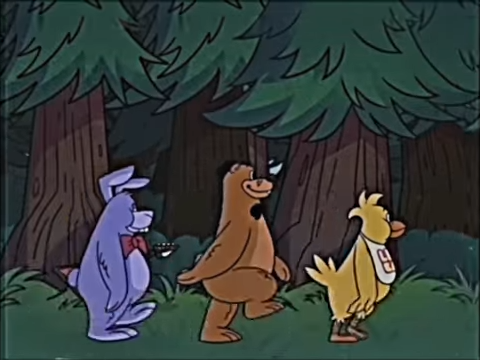 |
| VID-87-nXKj | Circa 1990 | Fazbear Entertainment Inc. |
Freddy & Friends: On Tour! - Episode 2
Description: Episode 2 of the Freddy & Friends TV Series
|
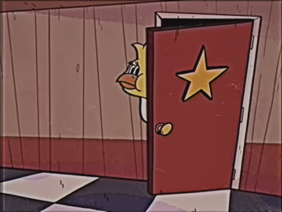 |
| VID-87-spO2 | Circa 1990 | Fazbear Entertainment Inc. |
Freddy & Friends: On Tour! - Episode 3
Description: Episode 3 of the Freddy & Friends TV Series
|
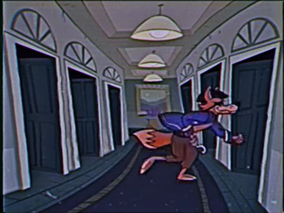 |
| VID-87-R6Of | Circa 1990 | Fazbear Entertainment Inc. |
Freddy & Friends: On Tour! - Episode 4
Description: Episode 4 of the Freddy & Friends TV Series
|
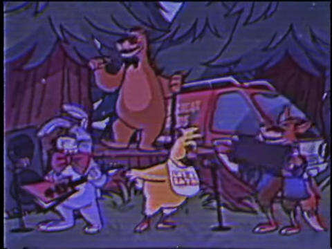 |
| VID-87-zM8t | Circa 1990-91 | Fazbear Entertainment Inc. |
Freddy Fazbear's Pizzeria Commercial
Description: Television commercial for the new Freddy
Fazbear's Pizza
|
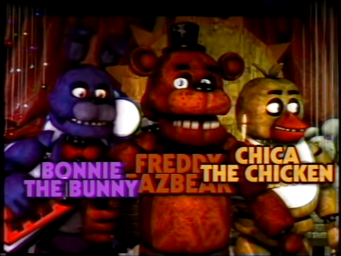 |
| VID-87-sbYV | June 27, 1992 | KSL-TV |
"KSL-TV 10pm News" - 06/27/1992 - "Children Missing from Local
Pizzeria"
Description: KSL-TV news report on the 1992 missing
children incident
|
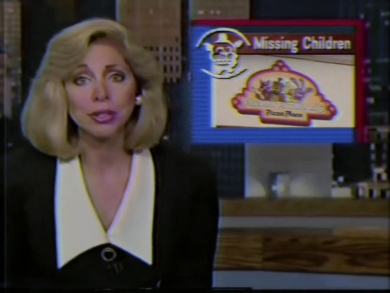 |
| VID-87-akvz | September 9, 1992 | KSL-TV |
"KSL-TV 6pm News" - 09/09/1992 - "Fazbear Entertainment Files
Bankruptcy"
Description: KSL-TV news report on the bankruptcy filing
of Fazbear Entertainment
|
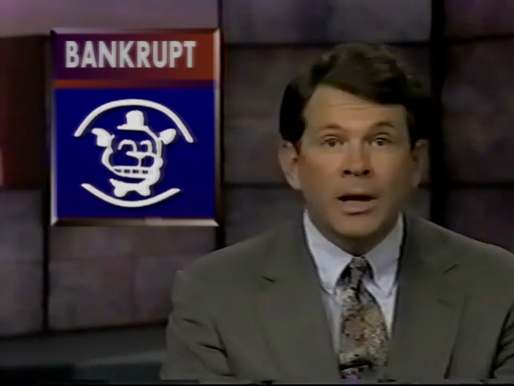 |
| VID-87-wEHj | October 31, 1992 | Unknown |
Halloween party show tape
Description: Home video of a party at the new Freddy
Fazbear's Pizza on Halloween
|
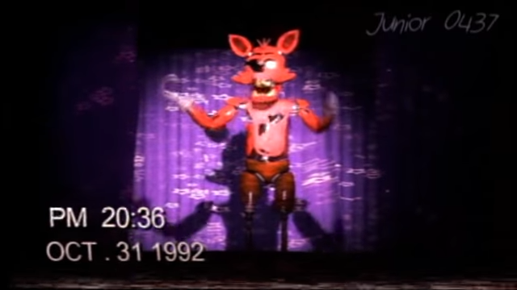 |
| VID-87-dybM | December 23, 1992 | Unknown |
Christmas special night at Freddy's
Description: Home video of a party at the new Freddy
Fazbear's Pizza on 12/23/92
|
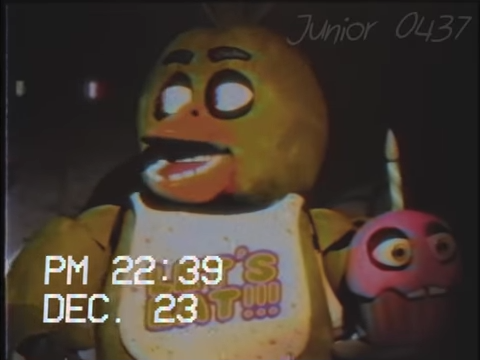 |
Index not found!
| ID | Date (if applicable) | Source (if applicable) | Description | Link |
| VID-87-Y0MG | August 13, 2014 | YouTube/Markiplier |
WARNING: SCARIEST GAME IN YEARS | Five Nights at Freddy's - Part
1
Description: YouTube video by Mark Fischbach
|
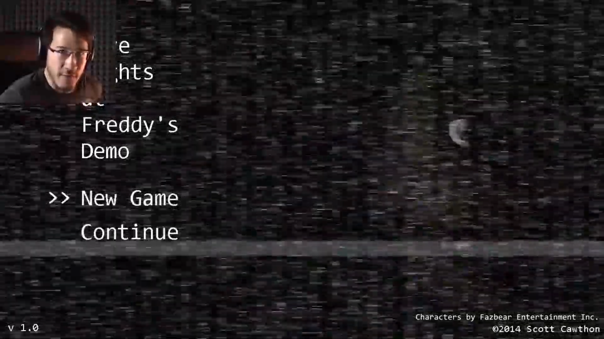 |
| VID-87-SBIu | October 23, 2014 | YouTube/The Game Theorists |
Game Theory: The DARK TRUTH behind Five Nights at Freddy's
Description: YouTube video by Matthew Patrick
|
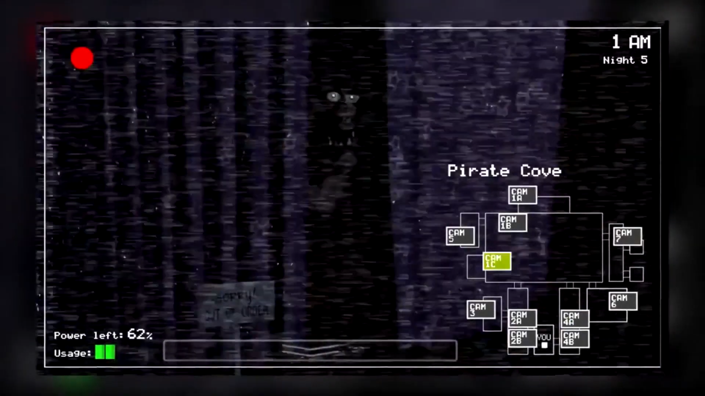 |
| ID | Date (if applicable) | Source (if applicable) | Description | Link |
| VID-87-toOX | March 10, 2023 | KFI-7 |
"KFI-7 24 Hours News" - 03/10/2023 - "Fazbear's Fright Fire"
Description: KFI-7 news report on the Fazbear's Fright
fire
|
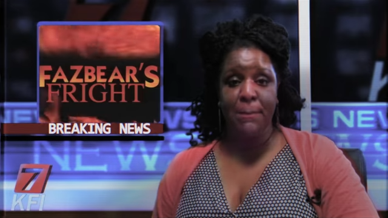 |
Index not found!
WARNING: All items, documents (either physical or digital)
produced by the Department, including this web-site, is classified under
"Secret" material. All unauthorized disclosure will result in a fine of
$2,500,000 and a prison sentence of up to 50 years.
© 1983 Department of Trans-Universal and Temporal
Communication
This is a FAKE parody website that is part of a series which dives into the question: "What if Five Nights at Freddy's was real?". Based on the design of old U.S. government websites from the 90s. Credits